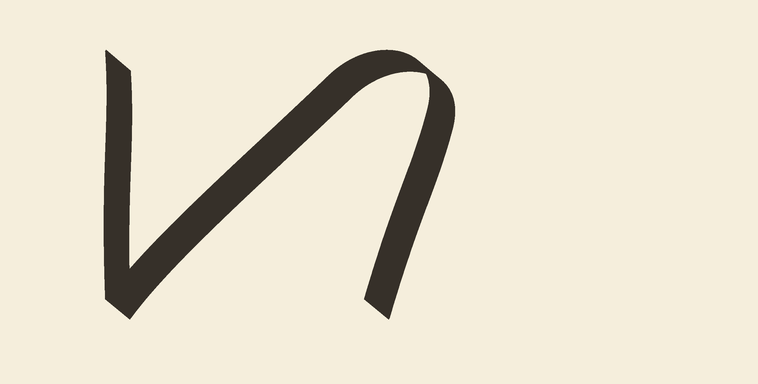
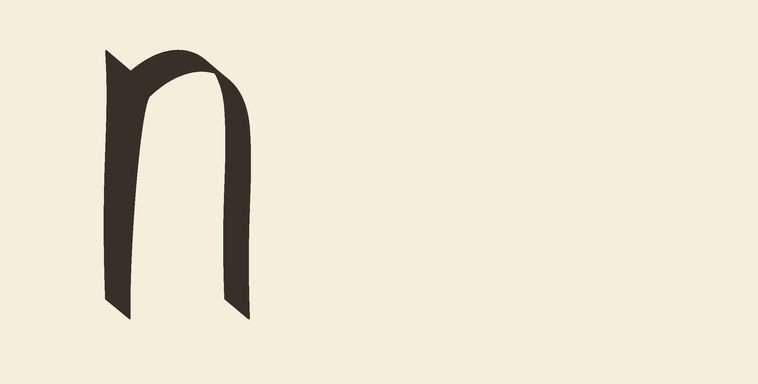
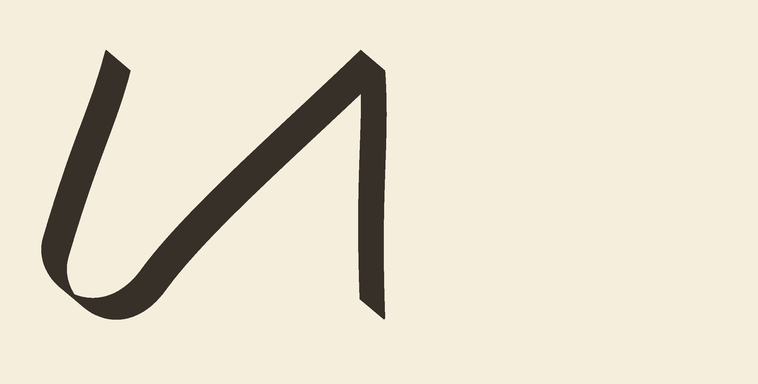
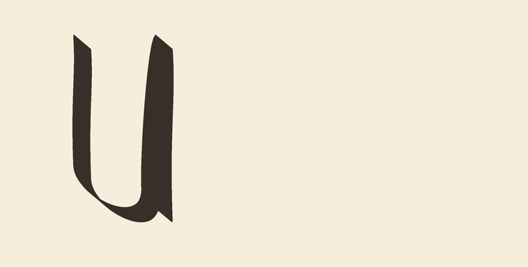
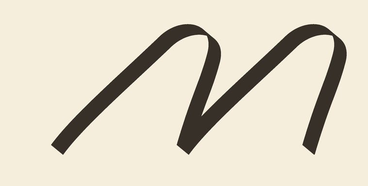
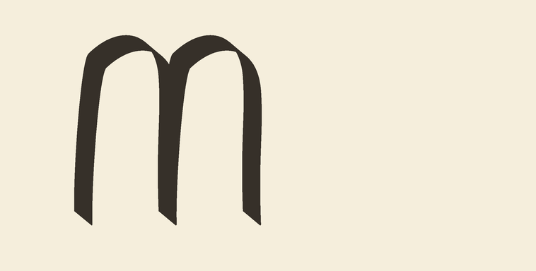
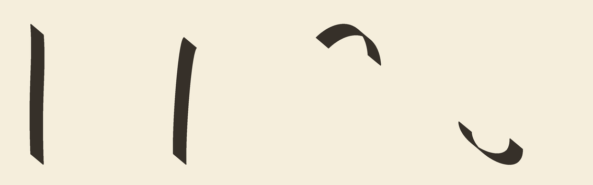

CURRICULUM-015 · shared vocabulary → n / u / m
Nominal design preview — awaiting your review. No fitting, actual hand simulation or acceptance run. Old and proposed ink use the same fixed nib, pressure and physical scale. These are construction comparisons, not independent targets.
Stem cubic geometry is unchanged. Upstroke bodies are more upright; the final rise still turns toward the arch. The n cap keeps its height profile and width, but its exit handle changes to meet the upright stem. Letter widths narrow; advance spacing is unchanged. Fixed-tool retracing may remain visually heavy.
Detail uses a shared, uncropped ink-containing frame at 1800 DPI; full views use 900 DPI. No per-letter stretching.


Old: pen down → pen up → pen down
Proposed: pen down throughout the letter.


Old: pen down → pen up → pen down
Proposed: pen down throughout the letter.


Old: pen down → pen up → pen down
Proposed: pen down throughout the letter.
Stem · rise · upper return · lower return. Isolated nominal ink, then vector centerlines at the same physical scale. These tiles are diagnostics, not an extra letter recipe.

Blue: stem · orange: rise · purple: upper return · teal: lower return. Arrows show writing direction; vector line width does not represent ink thickness.
For each n/u/m, say keep or repair: upstroke angle and stem proximity, descending slant, turn shape, width and overlap. Is the adjusted n cap still acceptable? We will not fit or run scored physical validation before this review.
Frozen candidate · Measurements and provenance · Pending owner review